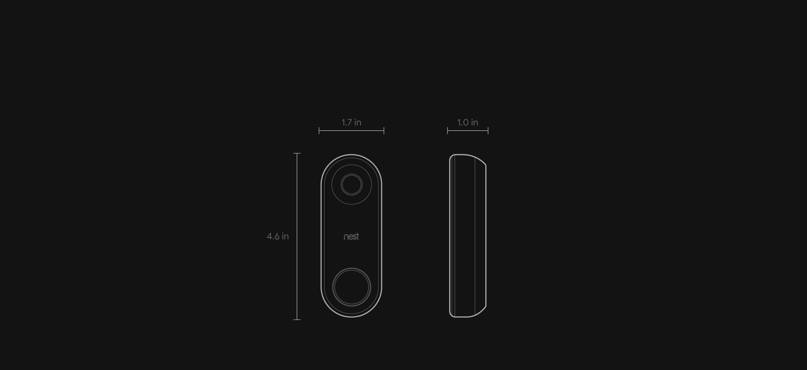

Google Nest Hello Doorbell
Foto Produk


Deskripsi Produk
-
Overview
Google nest hello doorbell adalah sebuah sistem yang memudahkan pengguna untuk dapat melihat dan berbicara dengan orang yang datang didepan pintu rumahnya. Google nest hello doorbell menggabungkan kenyamanan yang akrab dari bel pintu dengan keamanan dan kecerdasan kamera Nest yang tepercaya. Kamera Nest memiliki streaming langsung 24/7, pencitraan HDR (High Dynamic Range), dan night vision untuk memberi Anda pandangan yang jelas, siang atau malam hari. Dan itu bisa menyala dan mengirimi peringatan ke smartphone Anda ketika seseorang mendekat, bahkan jika mereka tidak membunyikan bel. Hal ini dikarenakan google nest hello doorbell dilengkapi dengan fitur person alerts dan face detection, sehingga Anda dapat menerima peringatan ketika ada orang yang datang didepan pintu rumah Anda dan dapat melihat detail wajah orang tersebut.
-
Saat ini Google nest hello doorbell dibanderol dengan harga 229 USD atau sekitar Rp. 3.230.000
-
Google Nest Hello Doorbell ditujukan kepada semua kalangan,namun diutamakan kepada pelanggan yang telah mempunyai akses home internet dan juga kepada pelanggan yang sangat ingin melindungi privasi untuk lingkungan keluarganya ataupun lingkungan rumah.
- Google Nest Hello Doorbell kini telah dijual hampir di setiap negara, termasuk di negara Indonesia. tersedia di tempat-tempat Google yang resmi, yang menyediakan Kamera dan produk Halo
Fungsi dan Fitur Produk
-
Fungsi Utama
Google nest hello doorbell berfungsi untuk melihat orang yang datang didepan pintu rumah Anda dan melihat detail wajah orang tersebut melalui smartphone. Ketika orang tersebut berdiri didepan pintu rumah, maka lingkaran lampu pada tombol google nest hello doorbell akan menyala. Lampu pada tombol tersebut berfungsi untuk memancing tamu agar menekan bell, sehingga google nest hello doorbell akan mengirimkan notifikasi ke smartphone ataupun device google smarthome Anda dan Anda dapat mengirimkan pesan suara pada bell melalui smartphone Anda.
-
Cara Penggunaan
Untuk menggunakan Google Nest Hello Doorbell, pengguna harus memasang produk ini terlebih dahulu di lokasi yang diinginkan pengguna seperti di depan pintu masuk rumah, pagar rumah halaman belakang, garasi, dan tempat strategis lainnya di pekarangan rumah. Kemudian hubungkan produk dengan jaringan internet sehingga fitur-fitur pada produk dapat berjalan dengan baik. Pengguna dapat menjalankan fitur-fitur yang ada dengan mengikuti panduan penggunaan yang telah disertakan di dalam paket penjualan, atau bila terjadi kendala di dalam penggunaan maka pengguna bisa menghubungi layanan pelanggan yang sudah tersedia.
-
Fitur Produk
- HD Live Streaming, motion, suara dan person alert
- Fitur night vision
- Terintegrasi dengan perangkat mobile anda
- Menggunakan teknologi 2-Way Audio
- Fitur package detection
- Facial recognition
- Dapat terhubung dengan polisi lokal setempat
-
Manfaatnya yaitu :
- Hasil Video dari produk ini akan tersimpan di dalam penyimpanan cloud, sehingga membuat data video ini aman dari yang namanya pencurian data
- Produk ini akan selalu aktif 24 jam setiap hari. sehingga anda bisa melihat siapa saja orang yang berada di depan rumah anda selama 24 jam terakhir
- Fitur Alert Person akan memberitahukan kepada anda, ketika ada seseorang atau tamu sedang berada di depan pintu rumah anda. sehingga ketika anda sedang keluar rumah, anda bisa mengetahui siapa yang sedang berkunjung di rumah anda.
- Night Vission akan membantu anda untuk melihat ketika malam hari. jadi tidak perlu takut lagi dengan tempat yang gelap dan tidak terlihat di sekitar depan rumah anda.
- Fitur Pre-Recorded Message akan membantu anda berinteraksi dengan orang yang sedang berada di depan rumah anda. Dengan fitur ini akan membantu anda dalam mengeluarkan Voice Mail seperti "Tunggu Sebentar"atau "saya sedang tidak ada dirumah hari ini" kepada tamu anda, meskipun anda sedang sibuk mengerjakan sesuatu didalam rumah atau sedang tidak berada didalam rumah.
- Dengan menggunakan pengamanan AES 128-bit encryption. produk ini terjamin keamanannya dari yang namanya pencurian data dan data rekaman dari orang lain. karena AES 128-bit encryption salah satu keamanan yang kuat.
Spesifikasi
Dimensi
- Tinggi: 4.6 inci (11.7 cm)
- Lebar: 1.7 inci (4.3 cm)
- Tebal: 1.0 inci (2.6 cm)
Berat
- 4.28 oz (122 g)
Penggunaan Daya
- 16V AC–24V AC; membutuhkan sebuah transformator daya 10VA dan and bel pintu berkabel
- Untuk rumah yang tidak memiliki bel pintu berkabel atau transformator daya yang tepat, Nest Hello dapat dipasang dengan Indoor Power Adapter
Kamera
- 1/3-inch, 3-megapixel (2K) sensor warnar
- 8x pembesaran digital
- Video
- Color
- Field of View
- What's In The Box
Wireless
- 802.11a/b/g/n/ac (2.4GHz/5GHz) 2x2 MIMO Wi-Fi; Didukung enkripsi WEP, WPA, WPA2
- Bluetooth Energi Rendah
- 802.15.4 (2.4GHz)
Languages
- Inggris (Amerika Serikat, Kerajaan Inggris)
- Belanda
- Perancis (Kanada, Perancis)
- Jerman
- Italia
- Spanyol
- Inggris (Amerika Serikat, Kerajaan Inggris)
- Denmark
- Belanda
- Finlandia
- Perancis (Kanada, Perancis)
- Jerman
- Italia
- Norwegia
- Spanyol
- Swedia
Green
- Sesuai dengan RoHS
- Sesuai dengan REACH
- Sesuai dengan pengisi daya baterai TITLE 20
- Kemasan dapat didaur ulang
Warranty
- Produk ini telah dilengkapi dengan garansi selama 2 tahun
-
Operasi Suhu
Google nest hello doorbell dapat beroperasi pada suhu mulai dari 5°F hingga 104°F atau sekitar –15°C hingga 40°C
-
Ketahanan Cuaca
Google nest hello doorbell dilengkapi dengan IPx4 yang dapat masih dapat bertahan di hujan lebat
-
Keamanan
Google nest hello doorbell dilengkapi dengan keamanan 128-bit AES dengan TLS/SSL
-
Audio
Google nest hello doorbell dilengkapi dengan speaker dan microphone berkualitas tinggi dengan kejernihan suara yang sangat baik.
-
Light
-
Sensor
Google nest hello doorbell dilengkapi dengan sensor ambient light. Ambient light sensor adalah sensor yang menangkap cahaya dari luar dan secara otomatis meredupkan cahaya pada device untuk menyesuaikannya. Sensor ini meningkatkan kenyamanan user untuk melihat tampilan kamera pada device, tanpa perlu khawatir dengan keadaan cahaya diluar rumah.
-
Night Vision
Google nest hello doorbell dilengkapi dengan infrared LEDs 850nm. Infrared ini berfungsi untuk memperjelas tampilan pada kamera saat kondisi sedang gelap, sehingga Anda dapat melihat tampilan dari kamera dengan jelas walaupun kondisi di luar sedang gelap.
-

Produk ini telah tersedia dalam bahasa :
Quick Response saat ini tersedia dalam bahasa :